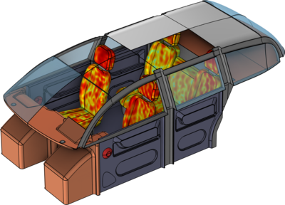
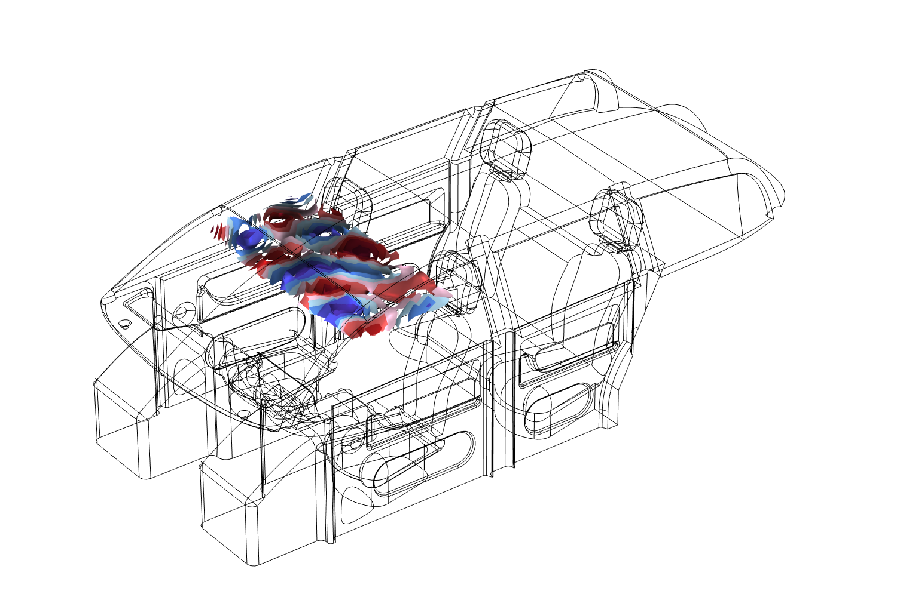
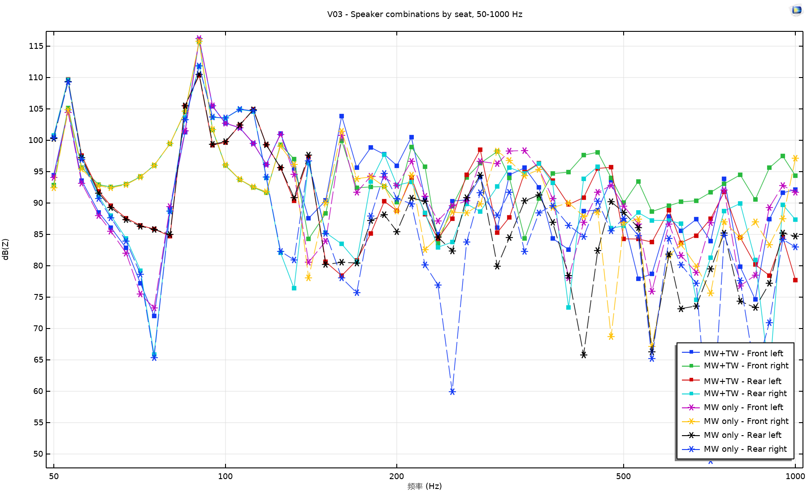
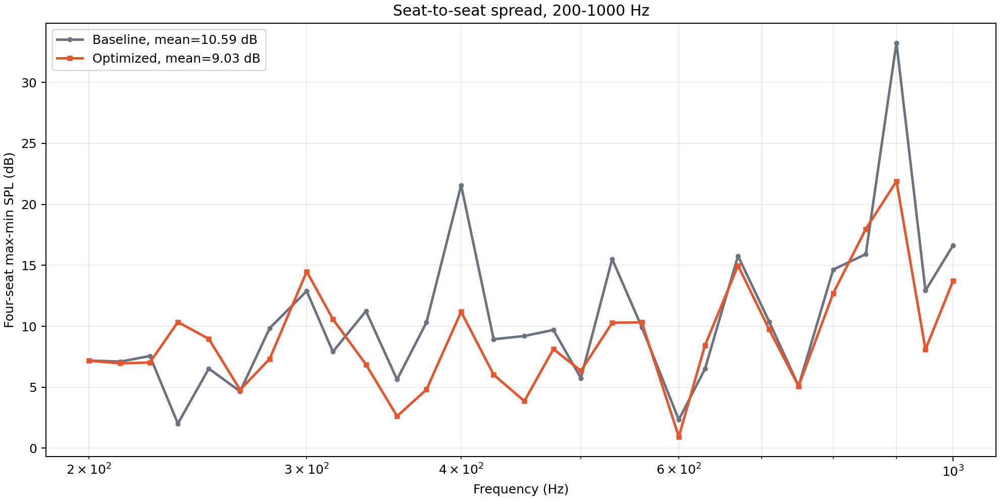
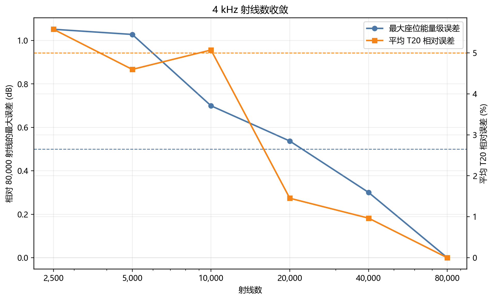
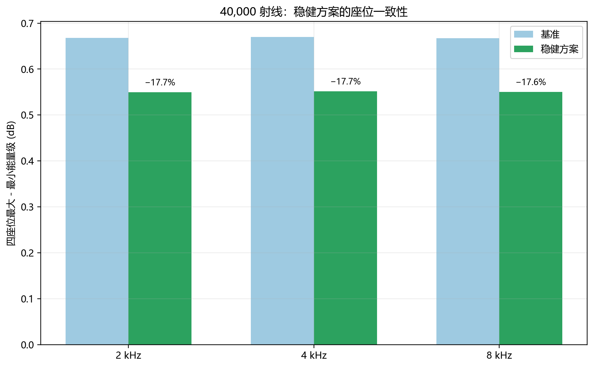
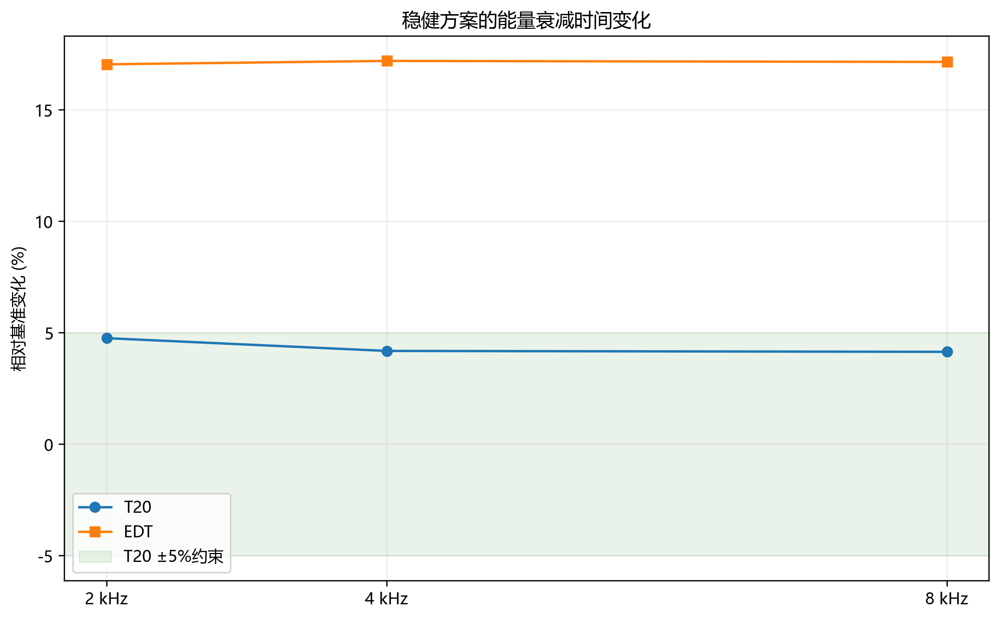

COMSOL CABIN ACOUSTICS
基于 COMSOL 的车载座舱音响系统声学响应仿真
面向封闭座舱低频模态起伏与多座位响应不一致问题，建立低频压力声学与高频射线声学联合分析流程，研究扬声器参数和内饰吸声特性对座舱声场的影响。
中低音与高音组合采用高音相对增益 -3 dB、延时 0.125 ms 后，200–1000 Hz 四座位平均响应极差由 10.59 dB 降至 9.03 dB，最大座位间离散度由 33.26 dB 降至 21.90 dB；高频稳健方案使 2、4、8 kHz 四座位能量离散度平均降低 17.66%。
项目背景
车内空间封闭且几何不规则，低频响应容易受到座舱模态和扬声器相位关系影响，不同座位之间常出现明显峰谷差异；进入中高频后，声场又受到内饰吸声、遮挡和多次反射的共同作用。因此，本项目将低频波动问题与高频能量衰减问题分别建模，再以多座位一致性作为共同评价目标。
建模方案
- 复现 COMSOL 官方车载座舱频域模型，检查几何、声源、吸声边界、网格与求解设置。
- 在压力声学频域模型中设置四个座位接收点，计算 50–1000 Hz 耳位声压响应。
- 分离中低音和高音扬声器的复声压贡献，扫描相对增益、延时与极性，优化四座位平均响应和座位间离散度。
- 在射线声学模型中计算 2、4、8 kHz 接收能量、EDT 和 T20，并扫描座椅、地毯、车窗与仪表板吸声参数。
- 通过直接重算、射线数收敛和随机种子重复计算验证数值结果。
模型与频域基线

模型保留车门、车窗、座椅、顶棚、地毯和仪表板等主要几何与声学边界。低频采用压力声学频域接口求解座舱内复声压，高频采用射线声学描述声线传播、反射和材料吸收。公开案例几何用于建立方法流程，不对应具体量产车型。

频域基线结果显示，座舱内声压并非均匀分布。边界反射和有限空间内的波动叠加在不同位置形成峰谷，因此单一测点不能代表整车听音区域，需要同时比较多个座位接收点。
四座位接收点与声源组合

在驾驶位、副驾驶位和后排左右座位的头部区域设置接收点，比较中低音单独工作与中低音、高音共同工作时的 50–1000 Hz 响应。四座位结果均来自修正后的真实座位坐标；早期用于流程检查的临时后排点不参与本页统计。
不同声源组合在部分频段出现增强或抵消，说明多扬声器叠加不能只比较幅值，还必须保留复声压的相位信息。
低频增益与延时优化
以中低音复声压为基准，对高音声源施加相对增益 G 和延时 τ，各座位总声压按下式合成：
p(f) = pMW(f) + G · pTW(f) · exp(-i2πfτ)
参数扫描同时评价 200–1000 Hz 四座位平均响应的频带极差和同频座位间离散度，避免只优化单个座位或单个频点。

为排除离线复数叠加的实现误差，将最优参数重新写入 COMSOL 并直接求解。直接重算与离线合成结果的最大 SPL 差为 0.0073 dB，均方根差为 0.0013 dB。
高频射线声学与材料参数
高频模型在 2、4、8 kHz 发射声线，并在四个座位头部区域设置半径 0.10 m 的虚拟接收球。接收能量用于比较座位间相对差异；对能量衰减曲线进行 Schroeder 反向积分，并分别在 0 至 -10 dB 和 -5 至 -25 dB 区间拟合 EDT 与 T20。
分别改变座椅、地毯、车窗和仪表板的吸声系数，考察材料参数对多座位能量一致性和衰减时间的影响。高频部分以接收能量与衰减指标为结论依据，不把声线路径截图作为定量结果。
射线数与随机种子验证

以 80,000 条射线为参考，40,000 条射线计算的最大座位能量误差为 0.3008 dB，平均 T20 误差为 0.9669%。在 4 kHz 使用 20,000 条射线进行五组随机种子重复计算时，最大座位能量极差为 0.3201 dB，最大 T20 变异系数为 2.04%。据此采用 20,000 条射线快速筛选参数，并以 40,000 条射线复核最终方案。
内饰吸声稳健方案

综合多频点结果，采用座椅吸声系数倍率 0.7、仪表板倍率 1.3，地毯与车窗保持基线。该方案在 2、4、8 kHz 使四座位接收能量离散度分别降低 17.69%、17.71% 和 17.56%，平均降低 17.66%。

方案改善座位间能量一致性的同时，T20 最大变化控制在 4.77% 以内；EDT 约增加 17%。这说明材料方案并非简单增加全舱吸声，而是在座位一致性和早期衰减特性之间进行折中。
项目结论
扬声器的相对增益和延时会改变复声压叠加，可用于缓解多座位响应峰谷与离散。
内饰吸声分配会同时影响接收能量均匀性、EDT 和 T20，需要以多指标筛选方案。
单点最优不等于整舱最优，四座位平均响应和座位间离散度应联合评估。
直接重算、射线数收敛和随机种子重复计算为参数优化结果提供数值检查。
模型边界
本项目基于公开案例几何与材料参数建立方法流程，尚未使用实车测量数据反标，因此结果用于比较方案相对变化，不代表具体车型的绝对声压级或混响指标。射线声学接收量为相对能量级，不能直接等同于以 20 μPa 为参考的绝对 SPL；低频与高频模型也尚未合成为经实测校准的全频响应。